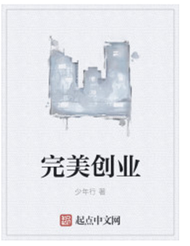

书籍名称：完美创业
Perfect business作 者：少年行
内容简介： 为什么叫财金主义？ 我们生活在一个各式各样“主义”的国度，其中有些主义是标准化的理论主张，而在更多的情境下，主义是意识形态的标语化。当书籍从手抄变成了大规模印刷到数字出版，我们也从理想主义来到了消费主义，来到了精致的利己主义。一旦意识形态不受任何约束的被权力所征用，“所有的乌托邦最终都不免流于乏味”，同化为一种声音的言语终被主义所杜撰。我们也杜撰了“财金主义”，乃至一个英文单词Financism，一个并不存在的主义。简单来说，财金主义就是一种用人文主义的情怀对待金融世界的功利主义的主张。我们立志从一篇文章开始，做我们想做的事，成为一个“新主义”的制造者。